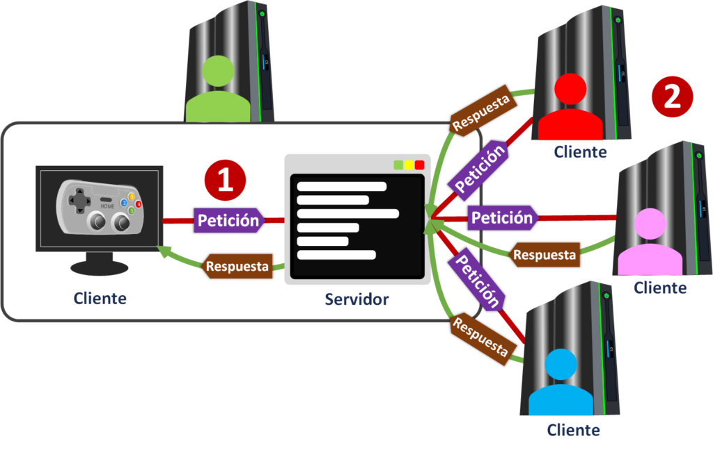

| Slider | |
|---|---|

|
|
| Año 1990-2000 | Slider (Deslizador): Es un componente de interfaz que muestra una serie de contenidos (imágenes, texto o videos) de forma secuencial, generalmente ocupando un lugar destacado (como la cabecera) y mostrando un elemento principal a la vez. |
| Carrusel | |


 |
|
| Año 2005 | Es una variante del slider que muestra múltiples elementos simultáneamente en una fila horizontal. El usuario puede avanzar o retroceder para ver el siguiente bloque de elementos, simulando el movimiento de un tiovivo. |